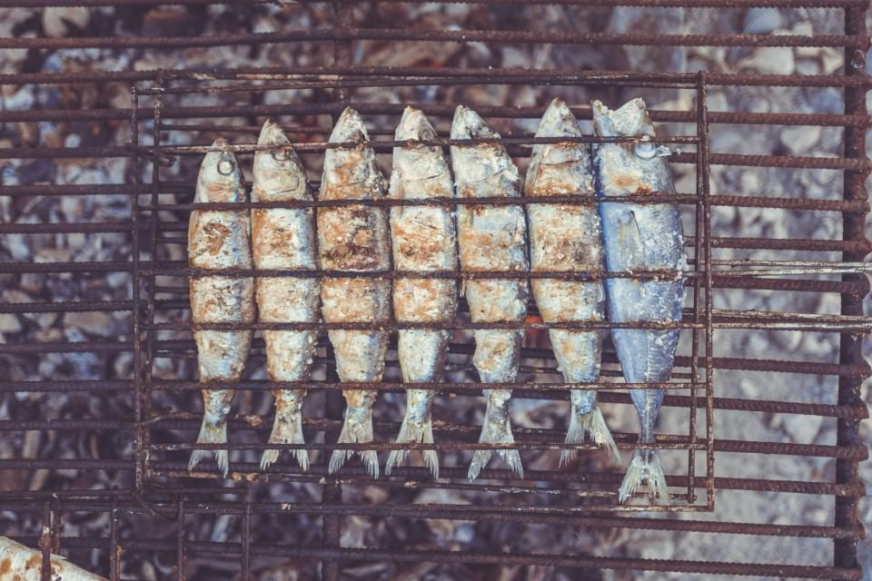
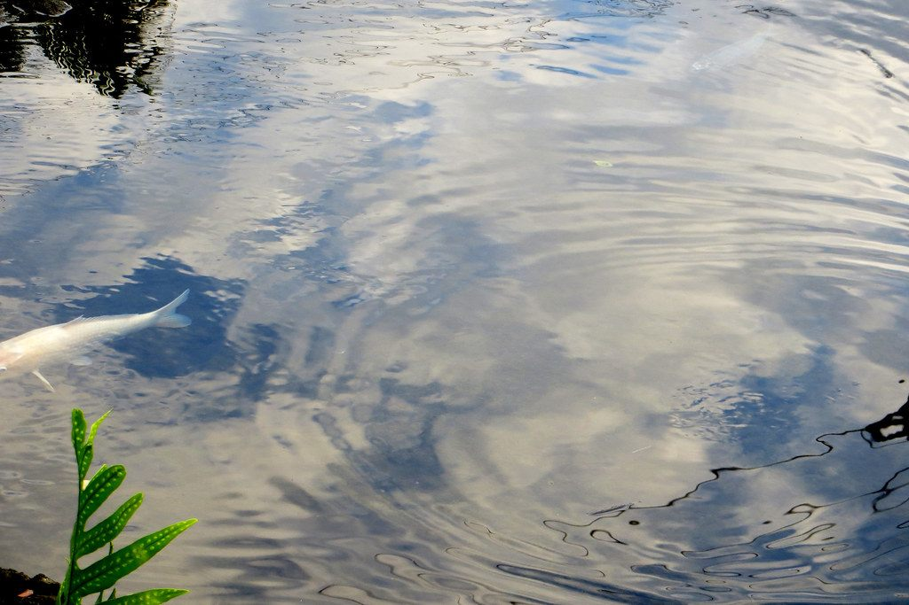

毎朝、豊洲へ。魚裕のこだわり
気さくなご夫婦が二人三脚で切り盛りする、柏の町の魚屋です。鮮度への向き合い方、料理屋仕込みの技、そしてお客様との距離の近さ――魚裕のこだわりをご紹介します。

SECTION A
その日いちばんの魚を、その日のうちに
店主は毎朝、豊洲市場まで自ら足を運び、その日の魚を自分の目で選んで仕入れています。市場から店先まで、時間を置かずに並べる――この積み重ねが「鮮度抜群」「スーパーの魚とは全然違う」というお客様の評価につながっています。何度も通ってくださるお客様が多いのも、この鮮度への向き合い方があってこそだと考えています。

SECTION B
魚屋の技と、料理人の技と
実は店主は、かつて近隣で料理屋を営んでいました。その経験は今、煮付けや焼き魚、フライといったお惣菜づくりに活かされています。魚を見極める魚屋の目と、美味しく仕上げる料理人の技。その両方を併せ持っているのが魚裕の強みです。お刺身だけでなく、温かいお惣菜もあわせてお楽しみください。

SECTION C
気さくなご夫婦が、お出迎え
店を切り盛りするのは、明るく気さくなご夫婦です。お二人とも奥で作業をされていることが多いのですが、遠慮なく声をかけていただければ大丈夫。お立ち寄りの際はぜひ、「今日のオススメは?」と聞いてみてください。その日いちばんのおすすめや、美味しい食べ方まで教えてくれます。
SECTION D
地域に愛され、信頼されて
魚裕は、地域の保育施設等にも魚を届けています。小さなお子さんが口にするものだからこそ、鮮度や安全性には日頃からいっそう気を配っています。こうした取り組みもあり、地域の皆さまから長く信頼をいただいている魚屋です。

SECTION E
丸魚もおまかせください
魚屋としての手仕事にも自信があります。
- 丸魚の内臓処理・三枚おろしにも対応(手早い作業ぶりにお客様も驚かれます)
- ご来店のお客様には氷のサービスもご用意
- お祝い用の鯛など、特別なご注文も電話でご相談いただけます(内容によりご対応が異なりますので、まずはお電話でご確認ください)
- おすすめの調理方法もその場でご案内します
お気軽にお電話ください
仕入れのご相談、お祝い用の鯛のご相談も、まずはお電話にてどうぞ。